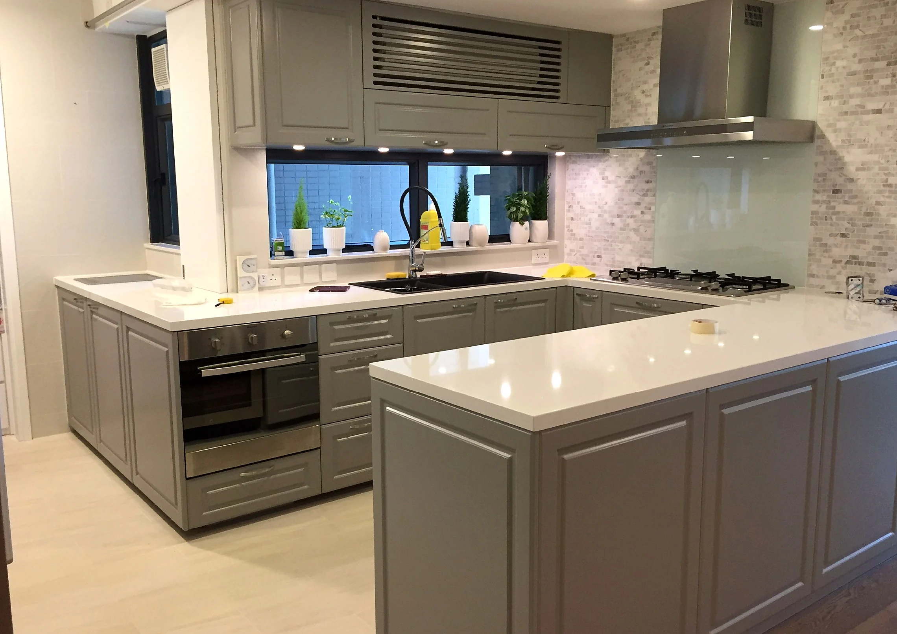
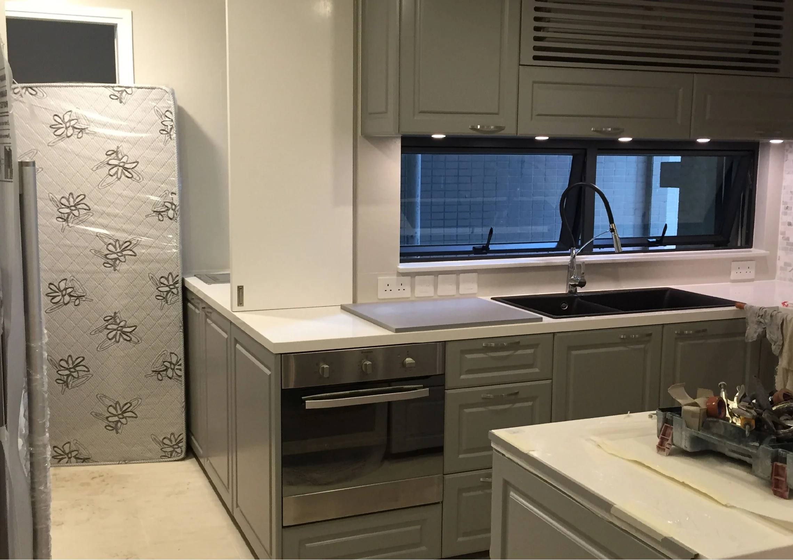
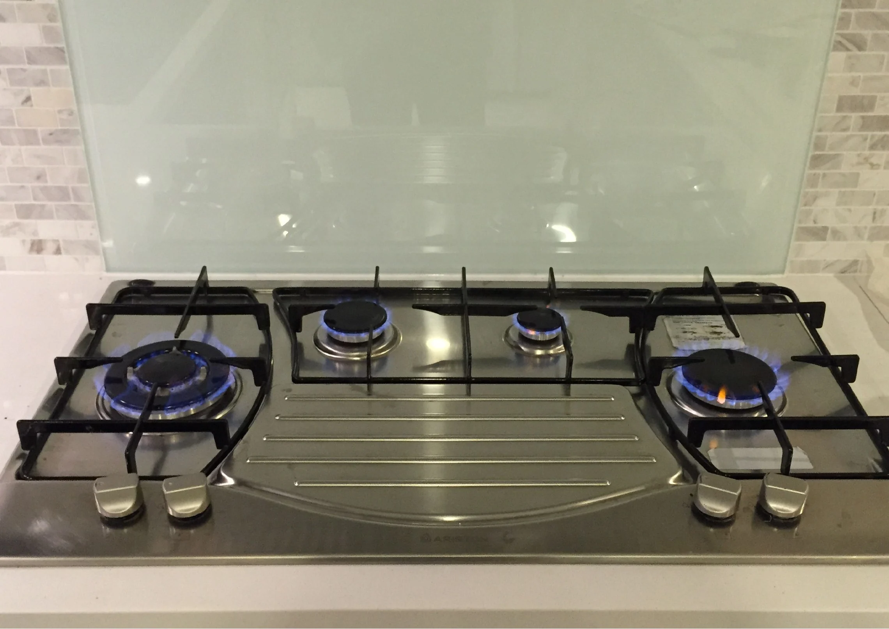
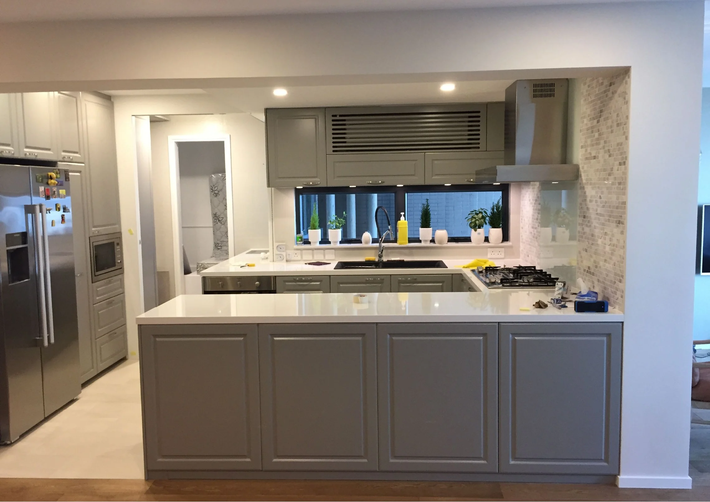

Work zones
The island provides a separate work surface with the sink, while the hob and extraction sit on the perimeter run. Built-in tall units complete the kitchen composition.
Several views of a Mid-Levels kitchen show muted grey cabinetry, pale work surfaces and a generous island. The sink sits at the island; the cooking run and extraction are kept to the perimeter.

Views of the cabinetry, island and cooking area in the supplied project record.



The island provides a separate work surface with the sink, while the hob and extraction sit on the perimeter run. Built-in tall units complete the kitchen composition.
Muted grey cabinet fronts and pale counters keep the larger surfaces calm; small-format backsplash tile and stainless-steel appliances add texture and contrast.
The supplied source record is photographic rather than a written client brief or contract schedule. This description is limited to visible finishes, fittings and spaces; it does not imply an unrecorded scope or outcome.